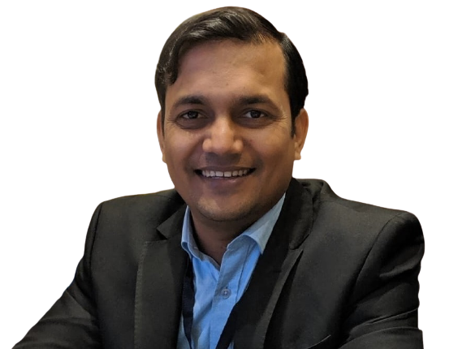
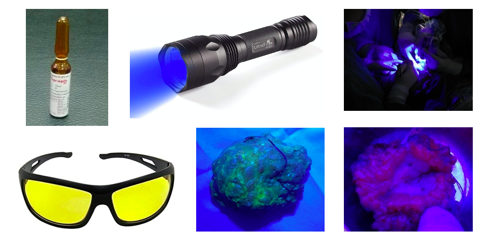
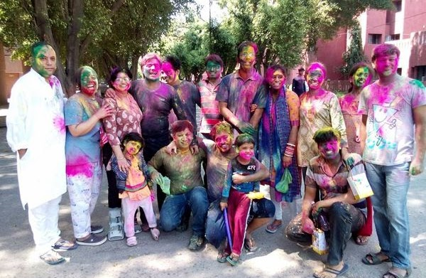
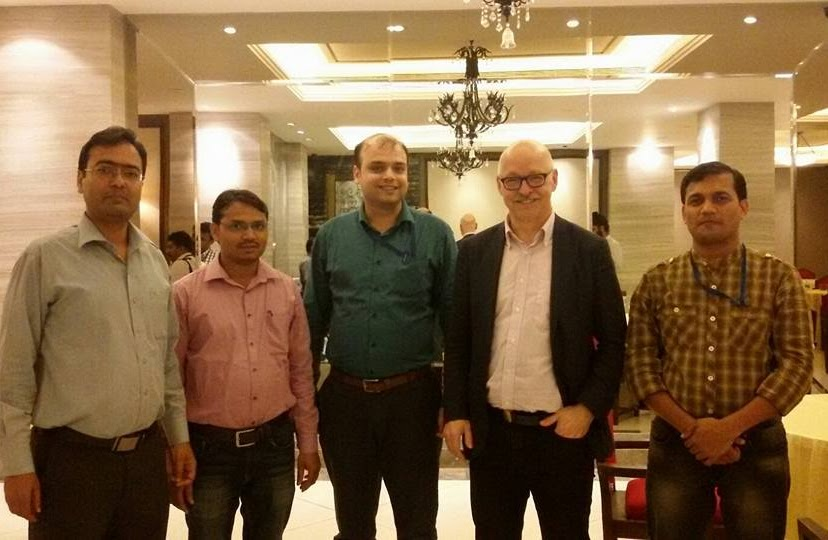
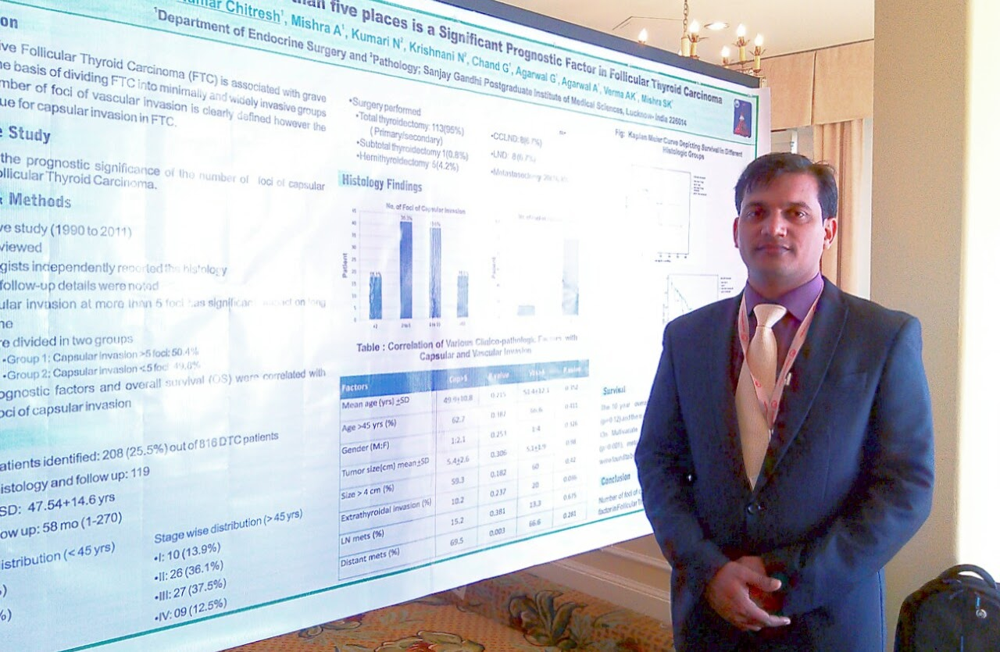
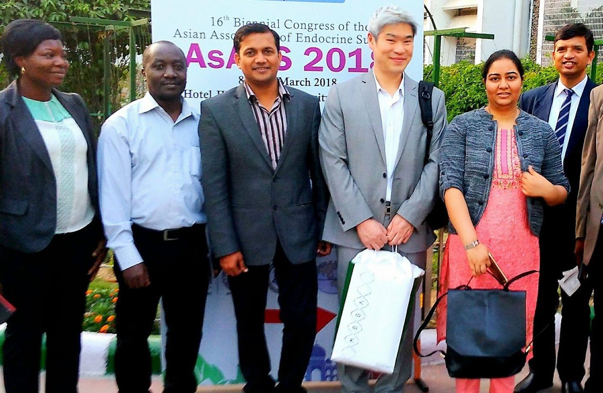
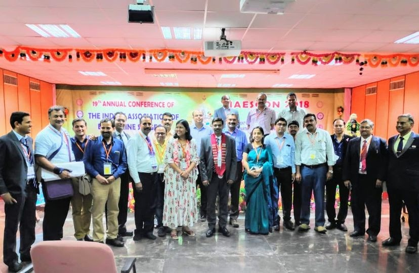
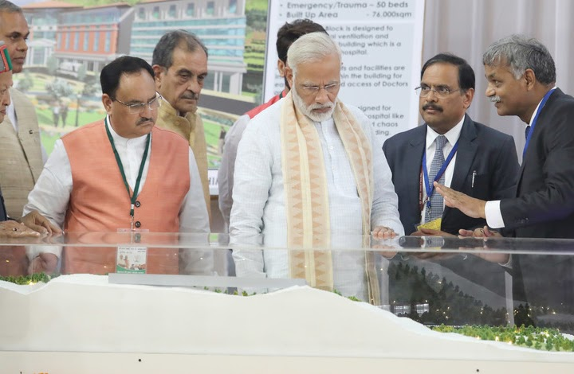

M.Ch. Endocrine Surgery
Associate Professor Surgical Oncology at AIIMS Bilaspur
Learn More
Hi, I am Dr. Chitresh Kumar Sharma (M.B.B.S., M.S., M.Ch., F.MAS., F.A.C.S.) currently working as Associate Professor Surgical Oncology at AIIMS Bilaspur, Himachal Pradesh. Previously served at National Cancer Institute, AIIMS, Jhajjar as Assistant Professor.
AIIMS, Bilaspur (H.P.) | 9th Dec 2020 - Present
Leading surgical oncology services with focus on endocrine surgeries and multidisciplinary cancer care.
National Cancer Institute, AIIMS, New Delhi | 8th Feb 2018 - 8th Dec 2020
Specialized in endocrine and breast oncology surgeries, research, and medical education.
Dept. of Surgical Disciplines, All India Institute of Medical Sciences, New Delhi | 29th Feb 2016 - 7th Feb 2018
Research and clinical work in surgical disciplines with focus on oncology.
Dept. of Endocrine and Breast Surgery, Sanjay Gandhi PG Institute of Medical Sciences, Lucknow | Completed June 2015
Specialized training in endocrine surgery including thyroid, parathyroid, adrenal, and breast surgeries.
Head and Neck Services, Memorial Sloan Kettering Cancer Center, USA | 3rd - 28th Nov 2014
International clinical observership in head and neck oncology services.
Laparoscopic Hospital, New Delhi | Completed Sept 2009
Advanced training in laparoscopic and minimally invasive surgical techniques.
Dept. of General Surgery, Institute of Medical Sciences, Banaras Hindu University, Varanasi | Completed
Master's degree in General Surgery with comprehensive surgical training.
Sir Sunderlal Hospital Institute of Medical Sciences, Varanasi | 1st Jan 2005 - 31st Dec 2005
Rotatory internship in Medicine, Surgery, Obstetrics & Gynecology, Family Welfare Planning, Radiology, Skin & VD, Orthopedics, Eye, E.N.T, Psychiatry, Community Medicine, and Pediatrics as per MCI guidelines.
Sanjay Gandhi Post Graduate Institute of Medical Sciences, Lucknow | July 2012 - June 2015
Specialized training in endocrine surgery with comprehensive exposure to thyroid, parathyroid, adrenal, and pancreatic surgeries.
Memorial Sloan Kettering Cancer Center, New York, USA | Nov 2014
Clinical observership in advanced cancer treatment and surgical techniques.
Laparoscopy Hospital, New Delhi (Endorsed by SAGES, USA) | Sept 2009
Fellowship in Minimal Access Surgery endorsed by Society of American Gastrointestinal and Endoscopic Surgeons.
Institute of Medical Sciences, Banaras Hindu University, Varanasi | May 2006 - May 2009
Master's degree in General Surgery with comprehensive surgical training.
Institute of Medical Sciences, Banaras Hindu University, Varanasi | July 2000 - Dec 2004
Bachelor of Medicine, Bachelor of Surgery degree.
International member focused on thyroid research and clinical practice
Fellow member with international surgical standards
Member promoting laparoscopic and minimally invasive surgery worldwide
Active member and regular presenter at IAESCON conferences
Life member and active participant in annual conferences
Member specializing in breast surgery and oncology
Member dedicated to thyroid surgery excellence in India
Professional member of the largest medical association in India







Bilaspur, Himachal Pradesh, INDIA
Phone: +91 xxxx-xxxx-xx
Email: drk.chitresh@gmail.com